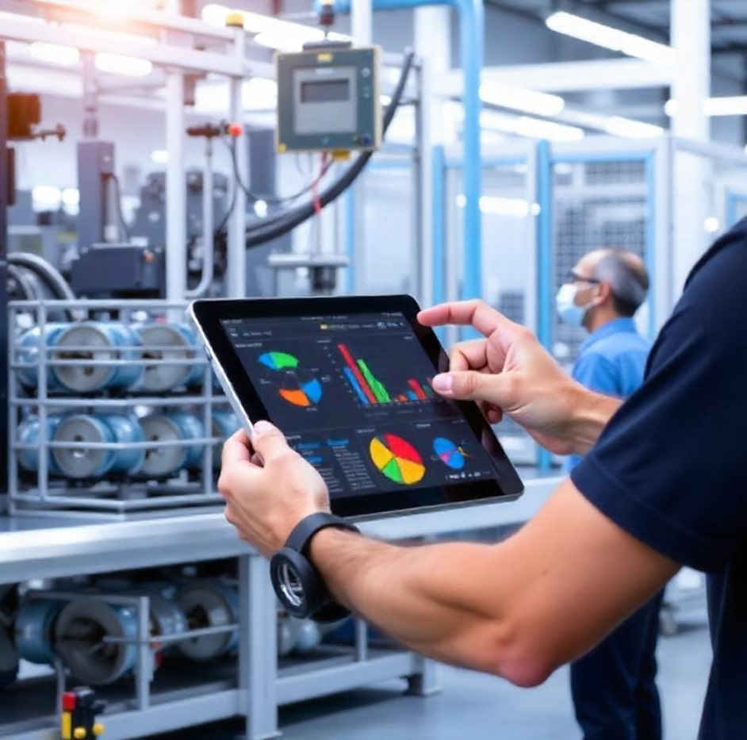
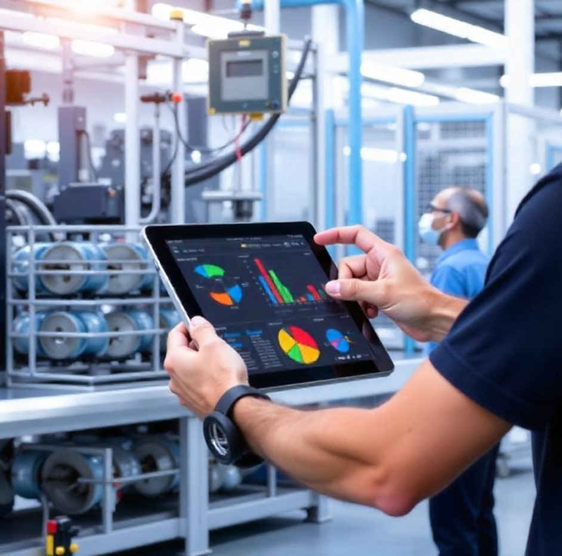

Remote monitoring technologies have evolved to provide real-time visibility of assets and automate critical workflows. By integrating IoT solutions, it boosts efficiency and security across industries, enabling data-driven decision-making while reducing reliance on manual intervention.
Combining IoT devices with blockchain ensures decentralized data collection and transparency, crucial in sectors like oil and gas for trustworthy and efficient operations (“A Blockchain-Based IoT Framework for Oil Field Remote Monitoring and Control,” 2021; Zuo& Qi, n.d.).
Processing data at the network’s edge decreases latency, elevates response times, and is pivotal for environments demanding immediate action—such as oil field operations (Ramzey et al., 2023).
: Incorporating IoT devices enables proactive interventions—predicting failures before they occur, thereby curbing downtime and expenses (Villegas-Ch et al., n.d.).
Predefined rules within blockchain-based systems automatically trigger maintenance or operational tasks, reducing manual oversight and increasing efficiency (“A Blockchain-Based IoT Framework for Oil Field Remote Monitoring and Control,” 2021; Zuo& Qi, n.d.).
Advanced encryption (e.g., AES 256-bit) safeguards data in transit and at rest, mitigating cyber risks and protecting sensitive operational information (Saleem et al., 2024).
Automated processes cut overhead and reallocate resources more effectively; for instance, the I2OT-EC framework lowered operational expenses and improved runtime in crude oil production (Ramzey et al., 2023).
IoT-based patient monitoring transmits real-time physiological data, enabling early detection and timely medical interventions (Islam et al., 2023).
This proactive stance alleviates hospital burdens and enhances patient outcomes.
Computer vision and robotics power live visual inspections, increasing product quality and production speed (Deshpande et al., 2023).
Remote and virtual inspection capabilities streamline workflows, cut labor costs, and raise building compliance standards (Einizinab et al., 2023).
Oil, gas, and energy rely on remote monitoring for operational safety and efficiency but must address integration complexity and robust infrastructure requirements.
Healthcare and other regulated fields require adherence to strict policies, ensuring data privacy and security.
Remote monitoring technologies are reshaping industries by delivering real-time asset visibility, automating critical workflows, and safeguarding data integrity. Innovation in IoT promises ever more secure, scalable, and cost-effective solutions.
Contact us today to discover how our customized remote monitoring solutions can drive efficiency, enhance security, and future-proof your organization’s most vital assets.
A Blockchain-Based IoT Framework for Oil Field Remote Monitoring and Control.(2021). IEEE Access, 14.
Deshpande, S., Roy, A., Johnson, J., & … (2023). Smart monitoring and automated real-time visual inspection of sealant applications (SMART-VIStA). Manufacturing Letters.
Einizinab, S., Khoshelham, K., Winter, S., & … (2023). Enabling technologies for remote and virtual inspection of building work. Automation in Construction, 4.
Islam, M. R., Kabir, M. M., Mridha, M. F., & … (2023). Deep learning-based IoT system for remote monitoring and early detection of health issues in real-time. Sensors, 54.
Madhwal, Y., Yanovich, Y., & … (n.d.). Enhancing supply chain efficiency and security: A proof of concept for IoT device integration with blockchain. IEEE Access, 7.
Papaioannou, C., Dimara, A., Papaioannou, A., & … (2025). Hierarchical resources management system for Internet of Things-enabled smart cities. Sensors.
Ramzey, H., Badawy, M. M., Elhosseini, M. A., & … (2023). I2OT-EC: A framework for smart real-time monitoring and controlling crude oil production exploiting IIoT and edge computing. Energies, 10.
Saleem, K., Zinou, M. F., Mohammad, F., & … (2024). End-to-end security enabled intelligent remote IoT monitoring system.
Frontiers of Physics in China, 2. Villegas-Ch, W., García-Ortiz, J. V., & Sánchez-Viteri, S. (n.d.).
Towards intelligent monitoring in IoT: AI applications for real-time analysis and prediction. IEEE Access, 6.
Zuo, Y., & Qi, Z. (n.d.). A blockchain-based IoT framework for oil field remote monitoring and control. IEEE Access, 8.

 


Reduce downtime by using sensor data & analytics to detect anomalies before they escalate.
Gain real-time visibility of assets from anywhere. Automate key workflows to boost efficiency.
Transform raw IoT data into actionable insights with dashboards tailored to your KPIs.
Track & minimize energy usage. Ideal for manufacturing plants or F&B producers with large machinery.
Industrial IoT (IIoT) investments can yield significant results and ROI through improved efficiency, reduced costs, enhanced data-driven decision-making, and competitive advantages
Boost OEE, reduce scrap, and offset labor constraints with Industry 4.0 solutions
Improve fleet and warehouse asset tracking, reducing lost inventory and turnaround times
Maintain temperature standards, ensure compliance, and minimize energy usage in production lines.
We tailor solutions to multiple industries—contact us with your unique IoT needs.
Mission: We provide tailored, cost-effective IoT solutions for enterprises in the Greater Toronto Area, helping them predict disruptions, prevent inefficiencies, and prosper through enhanced efficiency, productivity, and sustainable growth.
Vision:To be the GTA's leading IoT partner, empowering businesses with real-time insights and data-driven decision-making, fostering a new era of industrial innovation and success.
Use real-time data to spot issues before they occur.
(Slash downtime costs & surprises)Minimize downtime with proactive interventions.
(Reduce production hits & maintenance bills)Drive sustainable growth through efficient operations.
(Improve throughput, fuel expansion)Serving the GTA with agile, customized IIoT solutions.
(On-site support & quick response)